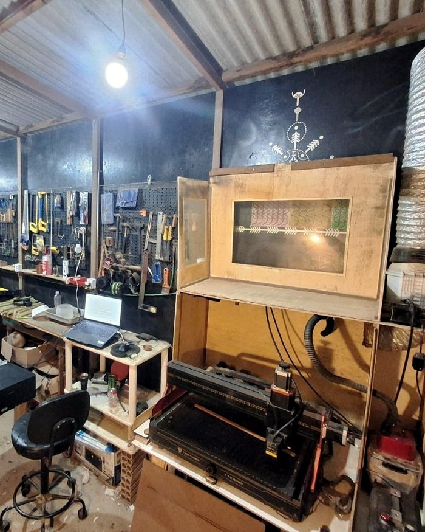

Igor Bastos
Luthier e pifeiro. Moro e tenho meu ateliê no Vale do Capão, na Chapada Diamantina.
Comecei em Salvador, trabalhando com madeira e artesanato de bambu. Aos 23 anos ganhei minha primeira flauta e ali encontrei o meu ofício.
Aprendi na prática. A experiência com o bambu me levou a criar minhas próprias flautas, e anos de pesquisa foram definindo técnica e som. Meu foco é a pesquisa de som: perfil interno, acabamento e afinação nas três oitavas. Também sou pifeiro, então faço o instrumento pensando em quem vai tocar. Minhas referências no pífano são Mestre Edmilson, Chau do Pife, Zé do Pife, João e Sebastião Biano.
Também construí rabecas, kalimbas e guitaleles. Isso me deu bagagem para improvisar e construir minhas próprias ferramentas, como os alargadores das flautas de madeira. Com o tempo senti a necessidade de focar, e hoje me dedico às flautas e aos estojos.
Visitas ao ateliê, no Vale do Capão, podem ser combinadas com antecedência.


O que sai daqui
Cada flauta reúne beleza, conforto para tocar e qualidade de som, com atenção a cada detalhe.


Quem recebeu
Mensagens que recebi de quem encomendou, com as palavras de cada um.
Recebi aqui... Sonzão viu? Pífano maravilhoso 😍😍 Muito obrigado mais uma vez.
Tatimaio de 2023
Recebi hoje, tava tudo perfeito, até a embalagem. Rsrs. Depois, quero te comprar uma de jacarandá em G. Abraço e muito obrigado pela sua atenção.
Osorio Tavaresmaio de 2022
Chegou! … Tudo em ordem. A flauta é muito bonita e o som não fica atrás!
Erivan Araujojunho de 2021
Recebi a flauta hoje... Tô apaixonada! Ela é muito linda 😍😍😍
Tatijulho de 2020
Bom dia chegou tudo certinho, muito obrigado por tudo a flauta e o case são ainda mais lindos pessoalmente, eu tô apaixonado 🥺, adorei o som dela tbm …
😗👌agosto de 2023
Cara, chegou aqui, estou encantado! Essa semana mesmo gravo um vídeo com ela e faço uma propaganda.
Otto Vieiramarço de 2019
não postei nada, mas to apaixonado aqui, som lindo demais!!
Gabriel Carvalhojulho de 2020
chegou sim, toda linda. Obrigado você, trabalho incrível 🙌🏿🙌🏿
Gabriel Carvalhojulho de 2020
Chegou, amigo! Coisa mais linda 🥰👏
Gabu Costajulho de 2023
Oi Igor, recebi sim, adorei. Muito obrigada!
Andrea Carvalhosetembro de 2023
Já chegou!! Amei!!! Obrigada
Erica Peroccomaio de 2024
… logo vi que a flauta chegou / Muito rápido
Bruno Santanaagosto de 2020
É bom ! o pífano chegou na casa do meu amigo!!! Muito obrigado ! …
TO KR (Théo)março de 2023